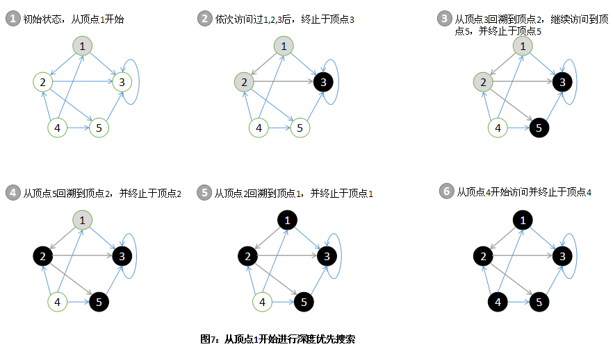
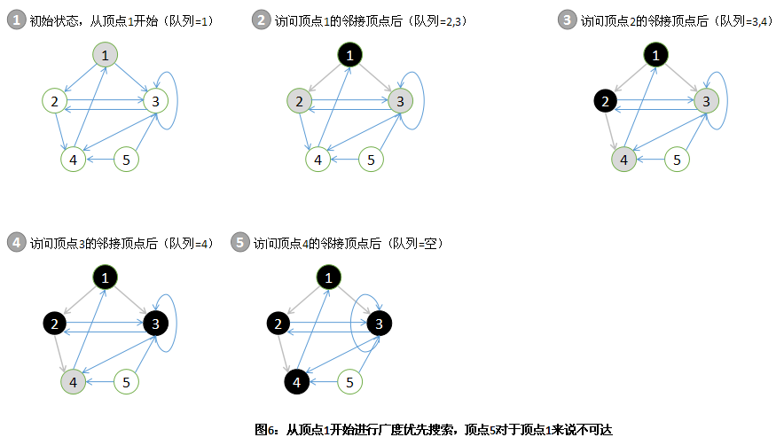

DFS( 深度优先搜索)
深度优先搜索在搜索过程中每当访问到某一个顶点后，需要递归地访问此顶点的所有未访问过的相邻顶点。因而，这种搜索将尽可能深地持续探索，直到无法继续为止。DFS是通过栈来实现的。
该算法执行过程是：从图中某个顶点发 v 出发，访问此顶点，然后依次从 v 的未被访问的邻接点出发深度优先遍历图，直至图中所有和 v 有路径相通的顶点都被访问到；若此时图中尚有顶点未被访问，则另选图中一个未曾被访问的顶点作起始点，重复上述过程，直至图中所有顶点都被访问到为止。

BFS( 广度优先搜索)
广度优先搜索在进一步探索图中的顶点之前，先访问当前顶点的所有邻接顶点。BFS是通过队列实现的。
该算法执行过程是：对于队列中的每一个顶点（初始状态下只有起始顶点），从队列首部选出这个顶点并找出每一个与之相邻接的顶点，将找到的邻接顶点入队到队列的末尾。

使用Java实现的DFS和BFS：
package datastructure;
import java.util.ArrayList;
import java.util.LinkedList;
public class GraphApp {
public static void main(String args[]) {
int n = 8, e = 9;// 分别代表结点个数和边的数目
String labels[] = { "1", "2", "3", "4", "5", "6", "7", "8" };// 结点的标识
Graph graph = new Graph(n);
for (String label : labels) {
graph.insertVertex(label);// 插入结点
}
// 插入九条边
graph.insertEdge(0, 1, 1);
graph.insertEdge(0, 2, 1);
graph.insertEdge(1, 3, 1);
graph.insertEdge(1, 4, 1);
graph.insertEdge(3, 7, 1);
graph.insertEdge(4, 7, 1);
graph.insertEdge(2, 5, 1);
graph.insertEdge(2, 6, 1);
graph.insertEdge(5, 6, 1);
graph.insertEdge(1, 0, 1);
graph.insertEdge(2, 0, 1);
graph.insertEdge(3, 1, 1);
graph.insertEdge(4, 1, 1);
graph.insertEdge(7, 3, 1);
graph.insertEdge(7, 4, 1);
graph.insertEdge(6, 2, 1);
graph.insertEdge(5, 2, 1);
graph.insertEdge(6, 5, 1);
System.out.println("深度优先搜索序列为：");
graph.depthFirstSearch();
System.out.println();
System.out.println("广度优先搜索序列为：");
graph.broadFirstSearch();
}
}
class Graph {
private ArrayList vertexList; // 存储顶点的链表
private int[][] edges; // 邻接矩阵，用来存储边
private int numOfEdges; // 边的数目
boolean[] isVisited;
public Graph(int n) {
// 初始化矩阵，一维数组，和边的数目
edges = new int[n][n];
vertexList = new ArrayList(n);
numOfEdges = 0;
}
// 得到结点的个数
public int getNumOfVertex() {
return vertexList.size();
}
// 得到边的数目
public int getNumOfEdges() {
return numOfEdges;
}
// 返回结点i的数据
public Object getValueByIndex(int i) {
return vertexList.get(i);
}
// 返回v1,v2的权值
public int getWeight(int v1, int v2) {
return edges[v1][v2];
}
// 插入结点
public void insertVertex(Object vertex) {
vertexList.add(vertexList.size(), vertex);
}
// 插入结点
public void insertEdge(int v1, int v2, int weight) {
edges[v1][v2] = weight;
numOfEdges++;
}
// 删除结点
public void deleteEdge(int v1, int v2) {
edges[v1][v2] = 0;
numOfEdges--;
}
// 得到第一个邻接结点的下标
public int getFirstNeighbor(int index) {
for (int j = 0; j < vertexList.size(); j++) {
if (edges[index][j] > 0) {
return j;
}
}
return -1;
}
// 根据前一个邻接结点的下标来取得下一个邻接结点
public int getNextNeighbor(int v1, int v2) {
for (int j = v2 + 1; j < vertexList.size(); j++) {
if (edges[v1][j] > 0) {
return j;
}
}
return -1;
}
// 私有函数，深度优先遍历
private void depthFirstSearch(boolean[] isVisited, int i) {
// 首先访问该结点，在控制台打印出来
System.out.print(getValueByIndex(i) + " ");
// 置该结点为已访问
isVisited[i] = true;
int w = getFirstNeighbor(i);
while (w != -1) {
if (!isVisited[w]) {
depthFirstSearch(isVisited, w);
}
w = getNextNeighbor(i, w);
}
}
// 对外公开函数，深度优先遍历，与其同名私有函数属于方法重载
public void depthFirstSearch() {
isVisited = new boolean[vertexList.size()];
for (int i = 0; i < getNumOfVertex(); i++) {
// 因为对于非连通图来说，并不是通过一个结点就一定可以遍历所有结点的。
if (!isVisited[i]) {
depthFirstSearch(isVisited, i);
}
}
}
// 私有函数，广度优先遍历
private void broadFirstSearch(boolean[] isVisited, int i) {
int u, w;
LinkedList queue = new LinkedList();
// 访问结点i
System.out.print(getValueByIndex(i) + " ");
isVisited[i] = true;
// 结点入队列
queue.addLast(i);
while (!queue.isEmpty()) {
u = ((Integer) queue.removeFirst()).intValue();
w = getFirstNeighbor(u);
while (w != -1) {
if (!isVisited[w]) {
// 访问该结点
System.out.print(getValueByIndex(w) + " ");
// 标记已被访问
isVisited[w] = true;
// 入队列
queue.addLast(w);
}
// 寻找下一个邻接结点
w = getNextNeighbor(u, w);
}
}
}
// 对外公开函数，广度优先遍历
public void broadFirstSearch() {
isVisited = new boolean[vertexList.size()];
for (int i = 0; i < getNumOfVertex(); i++) {
if (!isVisited[i]) {
broadFirstSearch(isVisited, i);
}
}
}
}